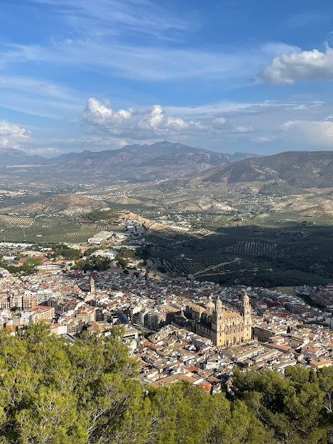
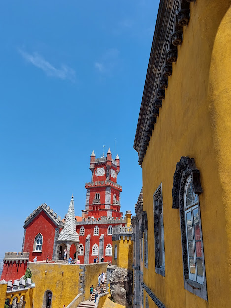
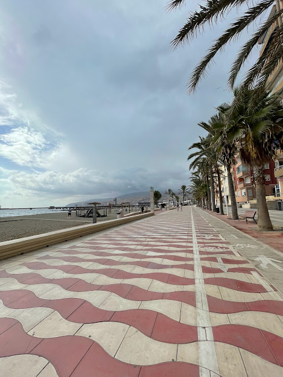
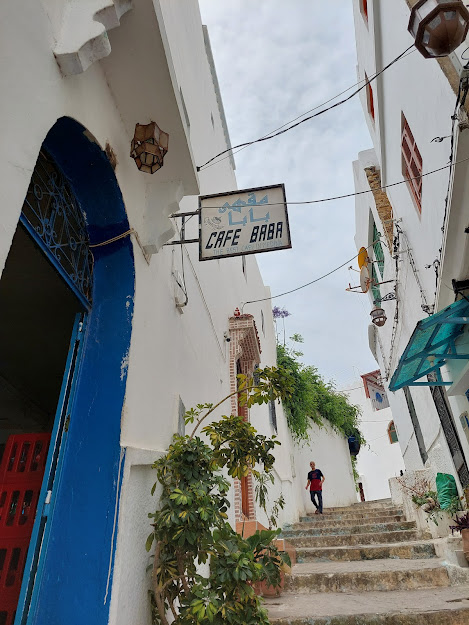
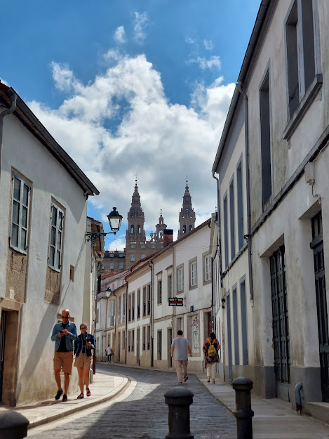
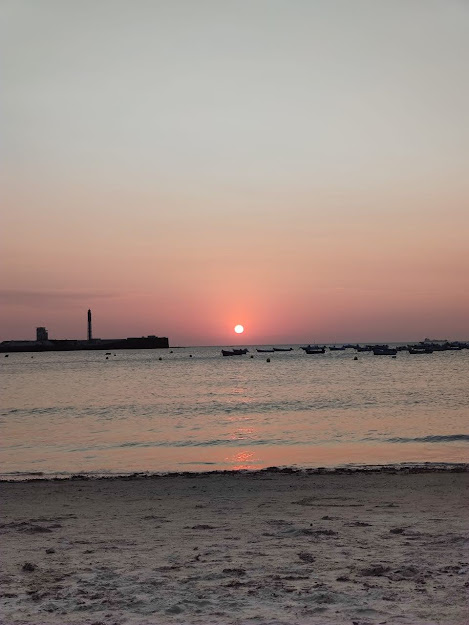

Nosotros somos Camello Loco.
Un blog de viajes en la que te garantizamos un compañero que va a ir a la par tuya descubriendo los mejores destinos.
Sorprendentes destinos como:
Jaén
La provincia de los olivos, se siente el aroma en todas partes, con una arquitectura divina, podes subir al castillo de Santa Catalina y tener una vista panorámica única de la ciudad como también de los campos de olivos, experiencias únicas.
Sintra
Sintra es lo más cercano a un cuento pero en la vida real, anímate a descubrir sus palacios de colores sus vistas imperdibles y su gran historia.
Almería
Esta ciudad de costa tiene unas playas hermosas acompañado de una gastronomía muy buena y a la vez económica, perdete en bares de tapas con unas cañas o en las playas mas californianas de toda España.
Tánger
Ciudades misteriosas si las hay, cada pasillo, cada calle es una historia nueva por contar, con sus playas podes visitar la cueva de Hercules, también disfrutar de un buen Té de menta en el café Baba como lo hicieron los Rolling Stones.
Santiago de Compostela
Una ciudad que te llega al corazón, siendo punto de llegada de peregrinos hace siglos esta ciudad puede tocar tu corazón y hacerte sentir su historia, respira amor, tradición y hogar, aparte de ser un paraíso del buen comer.
Cádiz
Una ciudad fundada en el S.XII con mucha historia en sus calles y mucha alegría en su gente, como si fuera poco además tienen unas playas de locura.